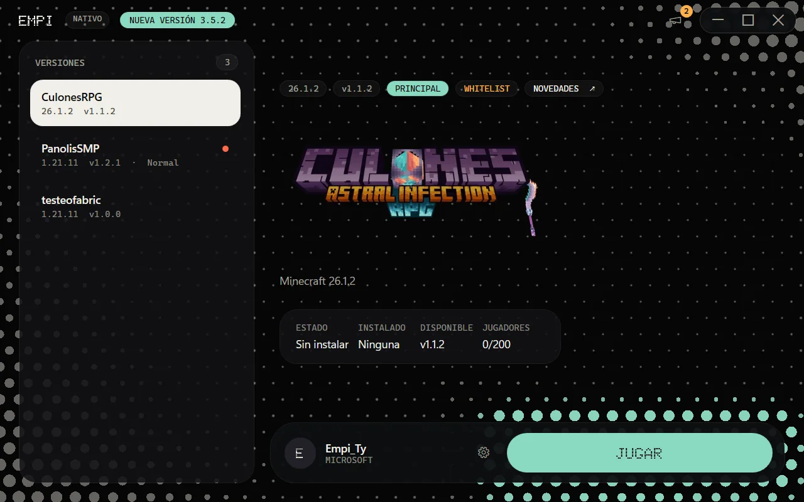
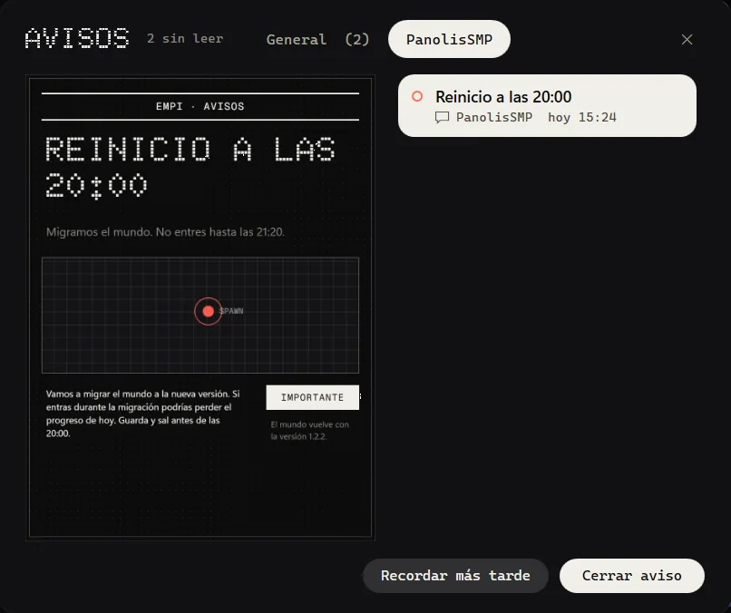

Mi launcher chistoso para Windows
Dale a Jugar.
Baja mis modpacks y los de mis amigowos, instala el Java que haga falta y los actualiza. Tú solo juegas.


La última versión
Todas las versiones- Versión
- Publicada
- Tamaño
- Instalador completo
- Sistema
- Windows 10 y 11, de 64 bits
Novedades
Lo que le fui metiendo al launcher en cada versión.
Qué hace este launcher
Te aviso sin que salgas del launcher
Si hay un aviso, un mantenimiento o algo por estrenar, te lo pongo aquí mismo, en una página como de periódico.

Java y mods, cero drama
Instala el Java que pida cada modpack, baja los mods y te avisa cuando sale una versión nueva del launcher.
¿Algo se rompió? Se arregla
Verificar y reparar revisa los archivos del modpack y vuelve a bajar solo los que estén dañados. Tus mundos ni los toca.
Cada modpack con su onda
Cada uno trae su propio fondo, banner y color, y el launcher los muestra tal cual ;3
Preguntas
¿Sirve para cualquier modpack?
Nop. Aquí salen los modpacks que hago yo o mis amigowos, y el launcher los baja y los abre. Para crear o importar otros no sirve.
Windows me sale con un aviso al instalar
Puede pasar: el instalador todavía no va firmado, porque los certificados cuestan lo suyo. En la ventana azul de SmartScreen dale a Más información y luego a Ejecutar de todos modos. Si tu Windows tiene Smart App Control activado, puede bloquearlo del todo, y ahí sí no puedo hacer nada.
¿Tengo que instalar Java?
Nop, olvídate del Java. El launcher instala el que necesite cada modpack.
¿Cómo entro?
Con tu cuenta de Microsoft. El login pasa en la página de Microsoft, así que ni el launcher ni yo vemos tu contraseña.